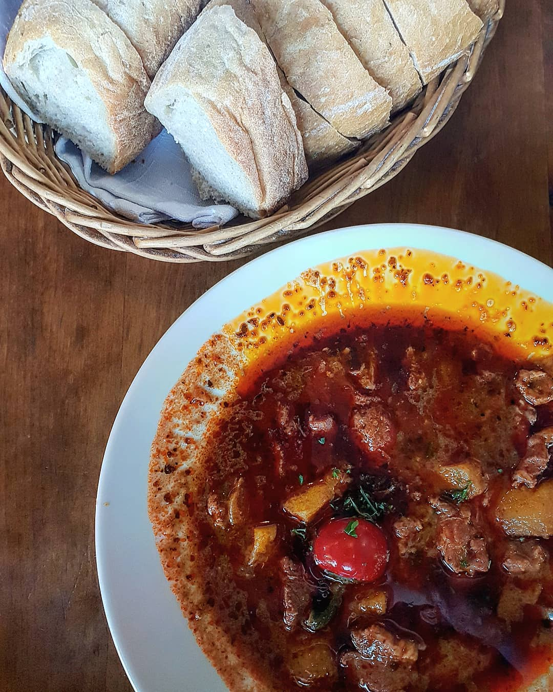

Baraní guľáš podľa @dominikasuchanova — Normy Jedál
The best lamb goulash #lambgulash #baranigulas #guláš #goulashtime #lamb #chillioil #freshbread #slovakstyle #slovakcuisine🇸🇰 #yummy #somuchmeat #meatcoma #chefslife #chefonholiday #foodporn #traditionaltattoos #easterneuropianstyle